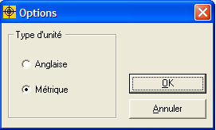

Unités de mesure
Le Fumiguide ProFume fonctionne n unités anglaises et métriques. Pointez sur Affichage dans la barre d'outil et sélectionnez "Options". Ensuite sélectionnez Unités anglaises ou métriques. Vous pouvez changer d'unités à tout moment dans une tâche, en suivant ces mêmes instructions.
